|
|
|
Woodpeckers Router Plane Blades |
|
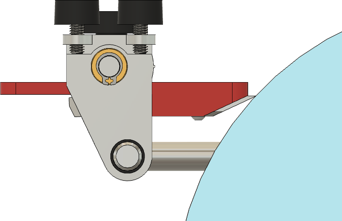
Straight blade in blade holder sharpening jig, held in SE-77, with a Japanese Waterstone |
|
|
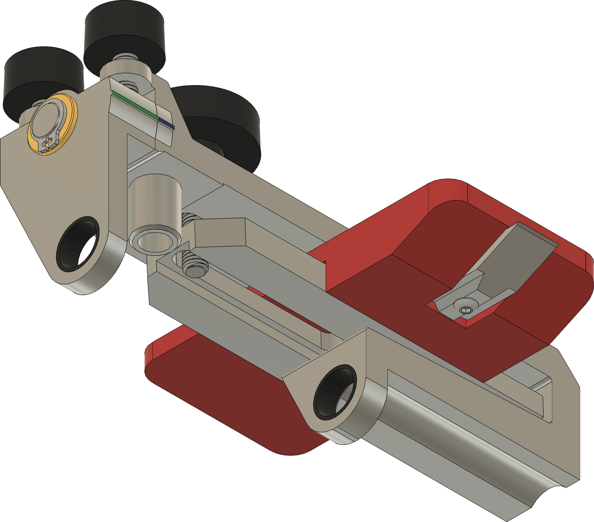
Straight blade in blade holder sharpening jig, held in SE-77 |
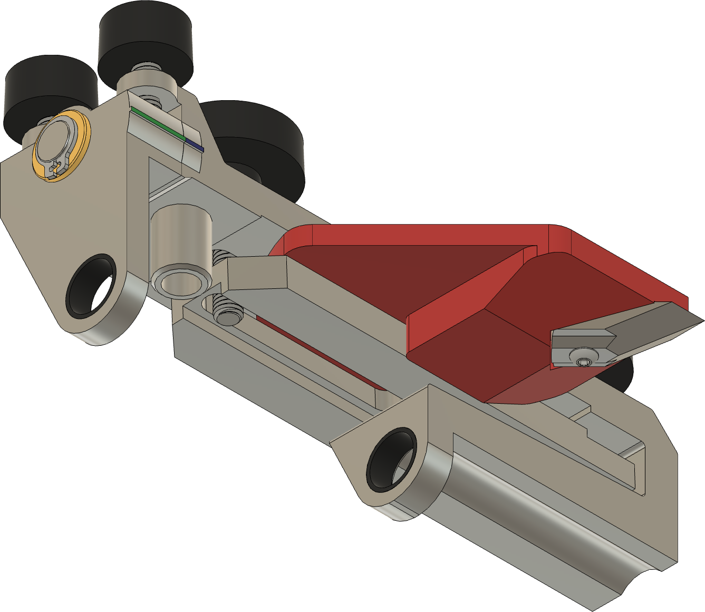
Spear point blade in blade holder sharpening jig, held in SE-77 |
The Woodpeckers router plane has blades which are removable from the blade holder shaft. These blades can then be sharpened on the Tormek grinder using a blade holder sharpening jig held in the Tormek SE-77 Square Edge jig or SE-76 Square Edge Jig.
Pictures of this approach are to the right. The blade holder sharpening jig is shown as the red part.
These blade holder sharpening jigs are designed for quick setup of the Tormek using the Tormek TTS-100 Turning Tool Setter. That means the process is fast, and the craftsman can get back to work sooner. (The sharpening workflow is outlined below.)
There are two versions of the blade holder sharpening jigs:
The two blade holder sharpening jigs are designed to be 3D-printed, and the designs are provided below.
You can click on any of the pictures to see a larger version.
Notes:
The alignment of the blade holder sharpening jig to the SVH-60 jig is the same however.
| Top view | Bottom view | Bottom view, with blade installed | Registration face (blue) | |
| Straight blade holder sharpening jig | 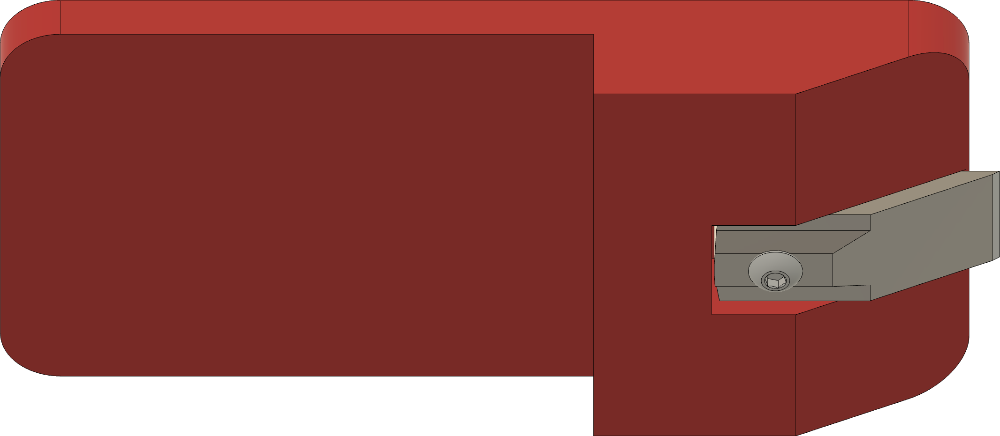 | 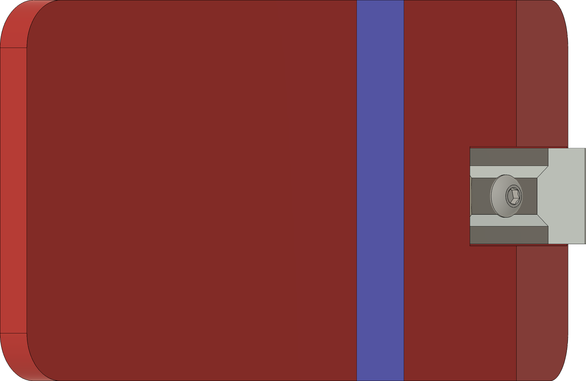 | ||
| Spear point blade holder sharpening jig | 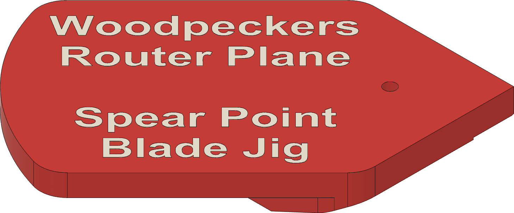 | 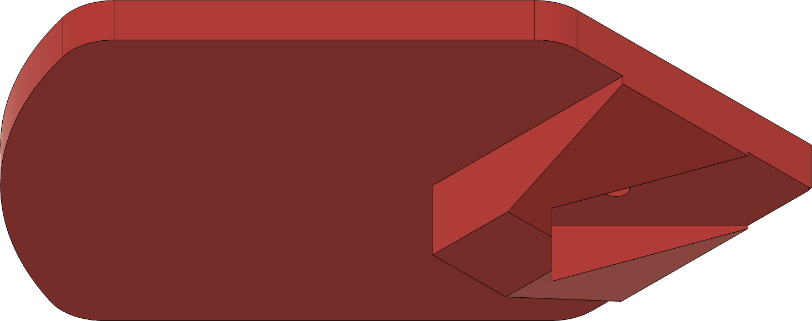 | 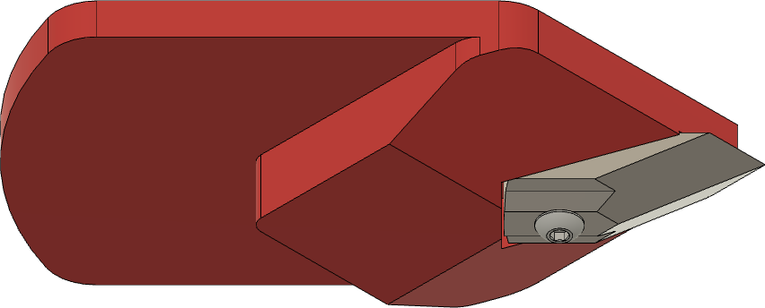 | 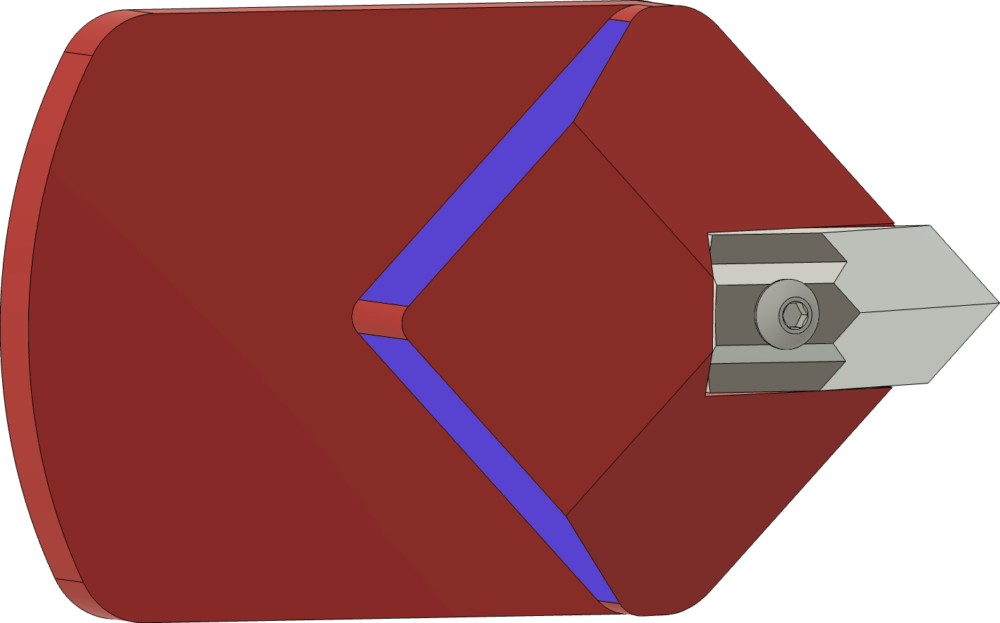 |
The blades supplied by Woodpeckers should only need to be honed periodically. If re-sharpening is required, then this tool holder should work, but the grinding should not be aggressive.
|
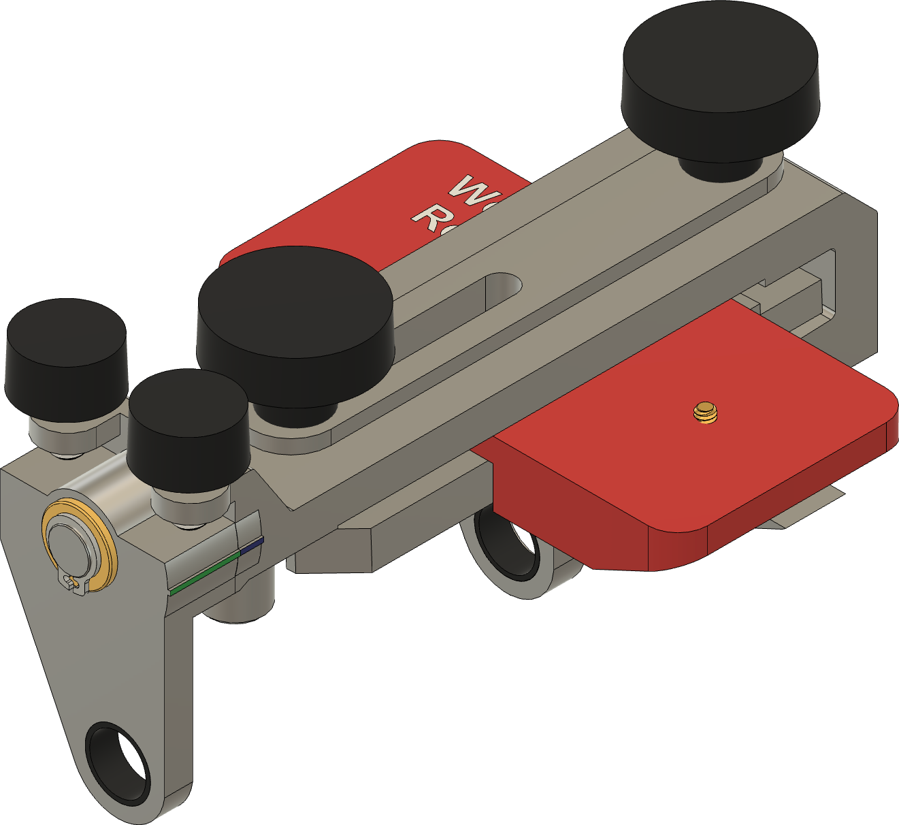
Straight blade |
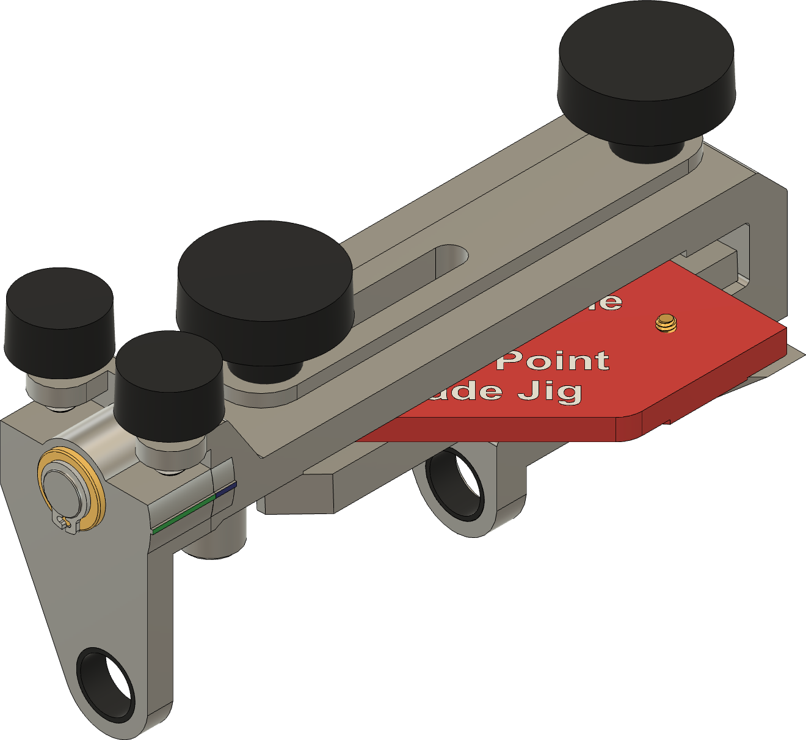
Spear point blade |
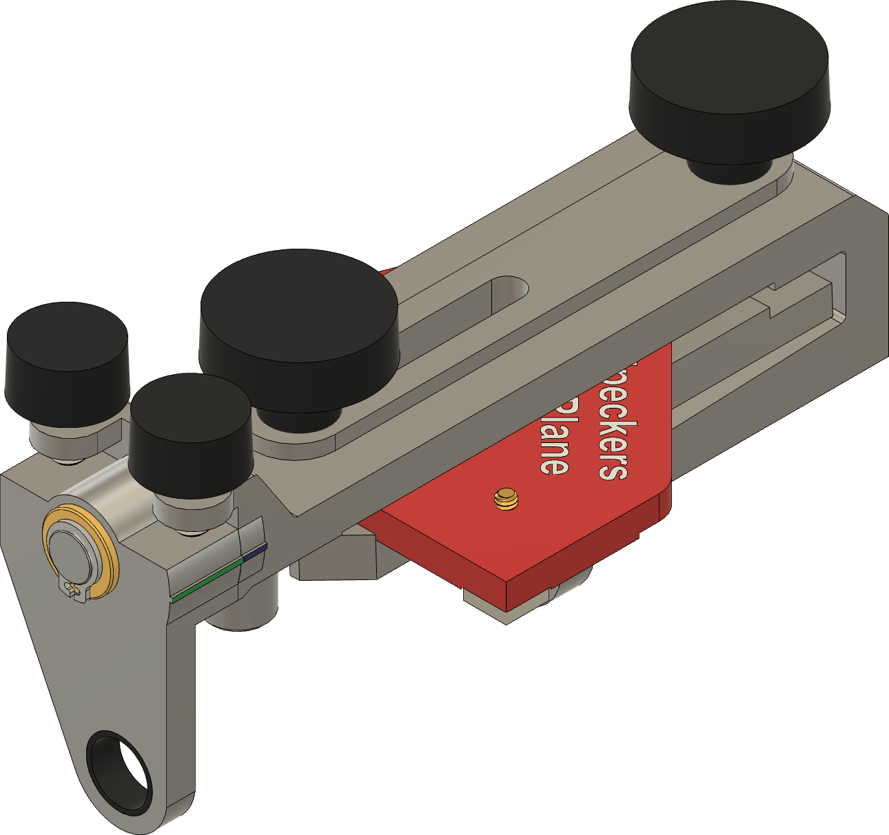
Spear point blade |
|
Blade holder sharpening jigs held in SE-77 |
||
The sharpening workflow steps are:
The horizontal, edge-trailing position is necessary for use on honing wheels, and is recommended when using the Japanese waterstone (SJ).
Do note that the spear point blade holder has two registration faces: one for each side of the blade’s edge. You will need to hone one side, and then reposition the blade holder sharpening jig for the other side and hone it.
The files needed to below.
| Blade Holder Sharpening Jig | 3MF | STL |
|---|---|---|
| Straight Blade Holder Sharpening Jig | RouterPlane-StraightBladeHolderJig.3mf | RouterPlane-StraightBladeHolderJig.stl |
| Spear Point Blade Holder Jig | RouterPlane-SpearPointBladeHolderJig.3mf | RouterPlane-SpearPointBladeHolderJig.stl |
You will also need these parts:
| Item | Source | Part Number | Comments |
|---|---|---|---|
| M3 x 0.50 mm Button Head Hex Drive Screw, 10mm Long | McMaster-Carr | 92095A182 | Used to attach the blade to the blade holder sharpening jig. Use this if you prefer metric thread sizes. |
| #6-32 Button Head Hex Drive Screw, ⅝” Long | McMaster-Carr | 92949A150 | Used to attach the blade to the blade holder sharpening jig. Use this if you prefer Imperial thread sizes. |
These tools are needed:
Straight blade in blade holder sharpening jig
An alternate design was created which does not require the SE-77. This design works well for the straight blade; however adapting it to the spear point blade will require a bit more effort.
The files needed to below.
| Blade Holder Sharpening Jig | 3MF | STL |
|---|---|---|
| Straight Blade Holder Sharpening Jig | RouterPlane-StraightBladeHolderJigv2.3mf | RouterPlane-StraightBladeHolderJigv2.stl |
| Spear Point Blade Holder Jig | (n/a) | (n/a) |